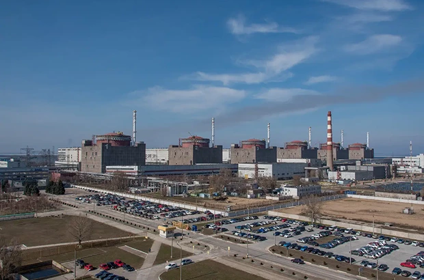

Найбільша атомна електростанція Європи
Найбільша атомна електростанція Європи — Запорізька АЕС — після місячного простою знову отримала підключення до української зовнішньої електромережі.
Це важливий крок задля підвищення ядерної безпеки в умовах війни.
Що буде з україною?
Ситуація з Запорізькою АЕС (ЗАЕС) є критичною і має значні наслідки для України через окупацію станції Росією та її перебування у стані "холодного зупинення". Основні ризики: постійна загроза ядерної безпеки через обстріли, можлива втрата зовнішнього електропостачання, що призводить до використання аварійних дизельних генераторів, та відсутність контролю України над роботою станції. Політичний аспект: ЗАЕС є одним із ключових каменів спотикання на переговорах про мир, але Україна наполягає на тому, що станція має залишатися українською, стверджуючи, що не продасть її та не передасть США, хоча США запропонували свою допомогу в управліннi.